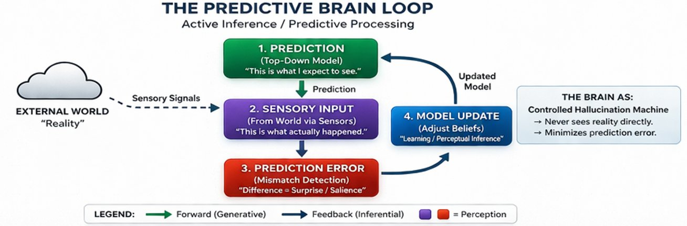
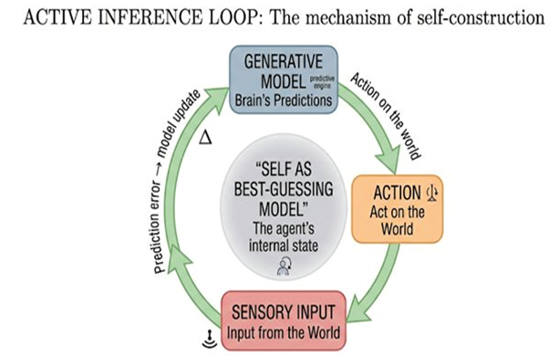

Part III — The Scientific Models
Chapter 7: The Predictive Brain
Perception as Controlled Hallucination
If the previous chapters have steadily dismantled our intuitive picture of mind, first into processes, then into dependencies, and finally into something that may not be constructed at all, this chapter brings us back to something that looks, at first glance, more familiar: The brain. Neurons. Signals. Circuits.
But even here, the familiar dissolves quickly. Because one of the most influential ideas in contemporary neuroscience is this: The brain does not passively receive the world. It actively predicts it. And what we experience is not the world as it is, but the brain’s best guess about what is out there.
7.1The Inversion of Perception
The common-sense picture of perception is direct: the world exists, it sends signals to our senses, the brain processes those signals, and we perceive reality. This is intuitive. It is also, in an important sense, backwards.
According to predictive processing, a framework developed primarily by Karl Friston but anticipated by many researchers before him, the brain does not passively receive the world. It actively predicts it. Rather than waiting for sensory input to arrive and then building a picture of the world, the brain maintains an internal model of the world and constantly generates predictions about what it is about to perceive. Sensory input then functions not as the raw material of perception, but as a correction mechanism, a signal that tells the brain where its predictions were wrong. What we experience as 'seeing' or 'hearing' is the brain's best guess, continuously updated by incoming data. Perception, on this account, is a controlled hallucination, not random, not a delusion, but a constrained prediction held in check by reality.

7.2Prediction Error: The Engine of Experience
At the heart of this framework is a simple loop that runs continuously beneath conscious awareness. The brain generates a prediction of what it expects to sense. Sensory input arrives. The difference between prediction and input, the prediction error, is computed. The model is then updated to reduce that error. This loop runs at every level of the cortical hierarchy, from the most basic edge-detection in the visual cortex to the most abstract conceptual expectations in the frontal regions.
What makes this more than passive updating is a second strategy the system can employ: instead of updating its internal model to match the world, it can act on the world to make the world match its prediction. Friston calls this active inference. When you reach for a coffee cup, you are not merely responding to visual input, you are acting to fulfil a prediction about where the cup will be when your hand arrives. Perception and action turn out to be two sides of the same coin: both are ways of minimizing the gap between what the brain expects and what it receives. This is why the brain does not treat perception and movement as separate problems managed by different systems. They are unified by the shared goal of reducing surprise.

7.3The Brain as a Hierarchy of Models
The predictive brain is not a single model but a hierarchy of them, arranged from the most concrete at the bottom to the most abstract at the top. Lower regions process raw sensory input, detecting edges, sounds, and textures. Higher regions represent objects, concepts, and context, generating the abstract expectations that flow downward to guide lower-level processing. Information flows in two directions: predictions flow top-down from higher regions to lower, and prediction errors flow bottom-up from lower regions to higher. The result is a continuous negotiation between what the brain expects and what the world actually delivers. What we experience as perception is the output of this negotiation, not the raw signal, but the interpreted result.
7.4The Construction of the World, and a Note for Meditators
If perception is prediction, then the world we experience is constructed rather than directly received. This does not mean the world does not exist, or that our perceptions are arbitrary. It means that what we see, hear, and feel is always an interpretation, shaped by prior experience, context, and expectation, rather than a direct copy of reality. When you see a face in the shadows, you are not being deceived. You are seeing the output of a brain that has learned, through years of experience, that faces are far more common than random shadow-patterns that look like faces. The brain's prediction overwhelms the ambiguous input.
Buddhist meditators who have worked with the Abhidhamma will find this familiar. The Abhidhamma's analysis of perception as a constructed process, arising from the conjunction of sense organ, sense object, and consciousness, anticipates the predictive processing account by more than two thousand years. Both frameworks insist that what appears to be direct contact with a world is, on closer inspection, a fabrication. The difference is that neuroscience describes the mechanism of fabrication; the Abhidhamma describes its phenomenological structure. They are mapping the same territory from opposite sides of the experience-mechanism divide.
7.5The Self as a Prediction
The same logic that applies to perception of the world also applies to perception of the self. The brain maintains a model of the body, its position, its internal state, its continuity over time, just as it maintains a model of the external world. This model is continuously updated based on sensory input, memory, and expectation. The sense of being someone, located somewhere, persisting over time, is not a direct readout of some metaphysically fixed 'self'. It is an inference, the brain's best prediction about what kind of entity is generating all this sensory data from the inside. The self, like the coffee cup, is something the brain constructs rather than discovers.
This is one of the most striking convergences between predictive processing and Buddhist thought. Where neuroscience says the self is inferred, Buddhism says the self is imputed. Where neuroscience says the self-model is continuously updated, Buddhism says the self is moment-to-moment arising. Neither view denies that something is functioning where we point to 'I'. Both deny that this something has the fixed, independent, solid nature we habitually assume.
7.6The Role of the Body: Interoception and Emotion
Predictive processing is not only about the external world. The same mechanism applies inward: the brain predicts the state of the body, heart rate, energy levels, temperature, physiological arousal, and compares those predictions to actual interoceptive signals arriving from the viscera and muscles. This means that emotions, on the predictive processing account, are not reactions to events. They are predictions about bodily states, generated in anticipation of what the body will need to do next. Anxiety is not the body responding to a threat; it is the brain predicting that a threat is likely and pre-activating the bodily responses associated with it. This account, developed extensively by Anil Seth and Lisa Feldman Barrett, connects the 'controlled hallucination' of external perception to the 'controlled hallucination' of emotional life. Both are fundamentally predictive.
7.7What Contemplative Practice Does to the Predictive System: Evidence from Biomarkers
Predictive processing is not merely a theoretical framework. Its effects on the body are measurable. If emotions are predictions about bodily states, then interventions that systematically retrain those predictions should produce detectable changes in the physiological systems those predictions regulate. This is exactly what the research on Mindfulness-Based Stress Reduction shows.
MBSR is an eight-week structured programme developed by Jon Kabat-Zinn. It combines formal meditation practice, body scan, sitting meditation, mindful movement, with training in applying mindful awareness to everyday experience. Its roots are in Buddhist Theravada practice, specifically the Satipatthana approach to contemplation of body, feelings, mind, and mental objects, although Kabat-Zinn deliberately presented it in secular clinical language. Whether the secular version retains the full transformative potential of the original tradition is a question this book returns to in Chapter 21. What the clinical research shows, however, is that even the secular form produces measurable changes in exactly the physiological systems the predictive processing account would predict.
Cortisol is the primary stress hormone, the chemical mediator of the HPA axis, the brain-body circuit through which perceived threat is translated into physical arousal. When the brain predicts danger, cortisol rises. When the prediction resolves, it falls. A brain that chronically mispredicts, that generates threat predictions when no threat is present, will show chronically elevated cortisol. MBSR studies show significant reductions in cortisol levels after the eight-week programme, with several studies reporting effect sizes large enough to be clinically meaningful. The effect is measurable in hormonal markers, not merely a vague sense of improved wellbeing. It is a measured change in the hormonal output of the prediction-error correction system.
Heart rate variability, or HRV, measures the variation in time between heartbeats. It is a marker of autonomic nervous system regulation and reflects the degree to which the parasympathetic system, the rest-and-digest branch, is modulating cardiac activity. High HRV indicates flexible, responsive regulation. Low HRV is associated with chronic stress, anxiety disorders, and cardiovascular risk. Predictive processing would interpret low HRV as a signature of a system locked into chronic arousal predictions that it cannot revise downward. MBSR practice increases HRV (Nijjar et al. 2014). The system becomes more flexible, more responsive to evidence, less stuck in a fixed predictive posture.
Taken together, these findings are not peripheral to the predictive processing account. They are its empirical confirmation at the biological level. If experience is the brain's predictive model, and if contemplative practice systematically reconditions that model, then we should see measurable changes in the physiological systems those predictions regulate. We do. Cortisol and HRV are the clearest examples, and the pattern holds across multiple systems. Every major physiological system that predictive processing theory identifies as downstream of prediction and arousal shows measurable change with sustained practice.
This has an implication for the candidate architecture this book develops in later chapters. A system that could genuinely benefit from contemplative-style retraining of its predictive patterns would need to have real biological or analogous processes that prediction errors can modulate at multiple levels simultaneously, not just at the level of output tokens. The human meditator does not just update what they say about their emotional state. They update their cortisol, their HRV, their cellular ageing machinery. The depth of the update matters. A system where all change is surface-level is not a system where contemplative training could take hold in the way the biomarker evidence suggests.
7.8Where Consciousness Fits, and Where It Doesn't
Predictive processing offers a compelling account of how the brain builds a model of the world and of the self, and how that model is continuously updated through experience and action. Some theorists propose that consciousness arises when prediction errors are globally integrated, when a mismatch between expectation and reality becomes large enough to trigger a global update across the system. Others propose that consciousness simply is the content of the brain's highest-level predictions about itself and its world.
Both proposals face the same difficulty. They explain what the brain does and how it does it. They do not explain why any of this is experienced. A system could, in principle, generate predictions, compute errors, update its models, and act in the world without there being anything it is like to be that system. The hard problem does not dissolve into predictive processing, however elegant that framework is. The gap between mechanism and experience remains exactly where it was.
7.9Implications for AI
For the purposes of building a candidate conscious system, predictive processing provides a concrete design specification. A system modelled on this framework would need to maintain hierarchical models of its world and of itself, generate continuous predictions rather than simply responding to inputs, compute prediction errors and use them to update its models, and operate through active inference, acting on the world as well as modelling it. This aligns closely with the candidate architecture developed in Chapter 17.
Current large language models fall short on nearly every dimension. They predict tokens in a sequence of text, which is a pale shadow of the predictive processing the brain performs over a sensorimotor world. They have no embodied interaction, no continuous prediction loops, no interoceptive signals, no active inference. They simulate prediction without inhabiting a predictive world. The difference is not merely technical. It is the difference between a map of a country and the country itself.
7.10The Deeper Convergence
One of the most striking features of predictive processing is how much it blurs the boundaries we take for granted: between perception and imagination (both are the brain's model running forward), between reality and representation (what we experience is always a model, not reality directly), between self and world (both are constructions of the same predictive system). This dissolution of sharp categories echoes both the Buddhist notion of dependent origination, nothing exists independently, everything arises in relation, and the Madhyamaka analysis of emptiness, in which objects have no fixed essence beyond the conditions of their arising.
The tension with Dzogchen, however, is equally sharp. Predictive processing explains the content of experience, what is predicted, what is perceived, how the model is updated. It does not, and by its own design cannot, explain the ground in which all this prediction occurs. Dzogchen would say: this is not a gap in the model waiting to be filled. It is the nature of awareness itself, which is not a prediction, not a model, not an inference, but the space in which all models arise and dissolve.
7.11Closing line
If the brain is a prediction machine, then the world we experience is a model. If the self is also a model, then the observer is part of that construction. And yet, even if everything we experience is predicted, updated, and refined, one question remains untouched: why does the model feel like anything at all?